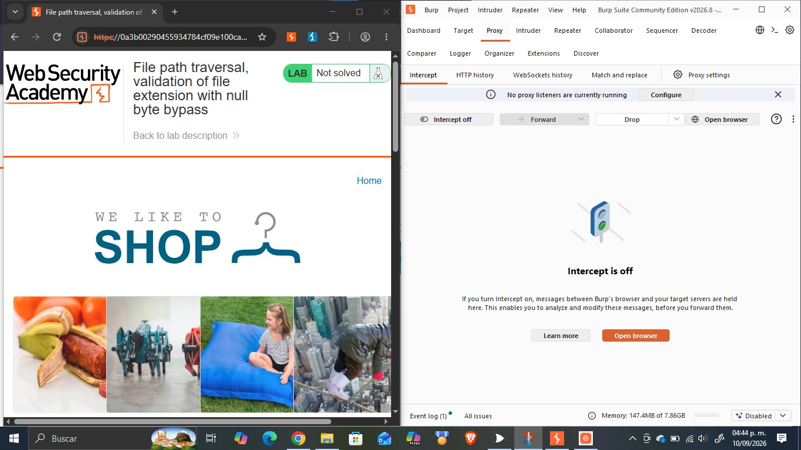
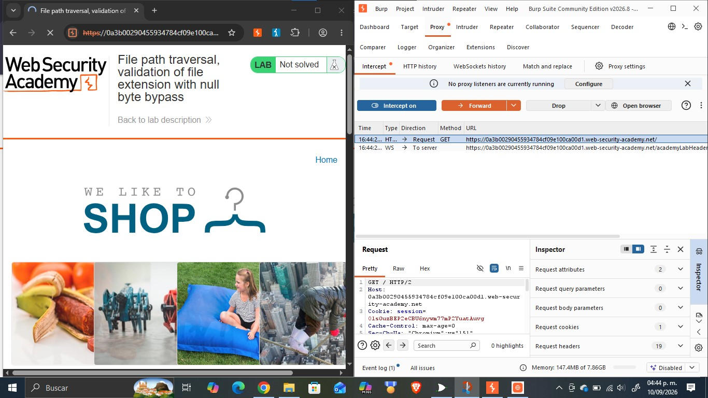
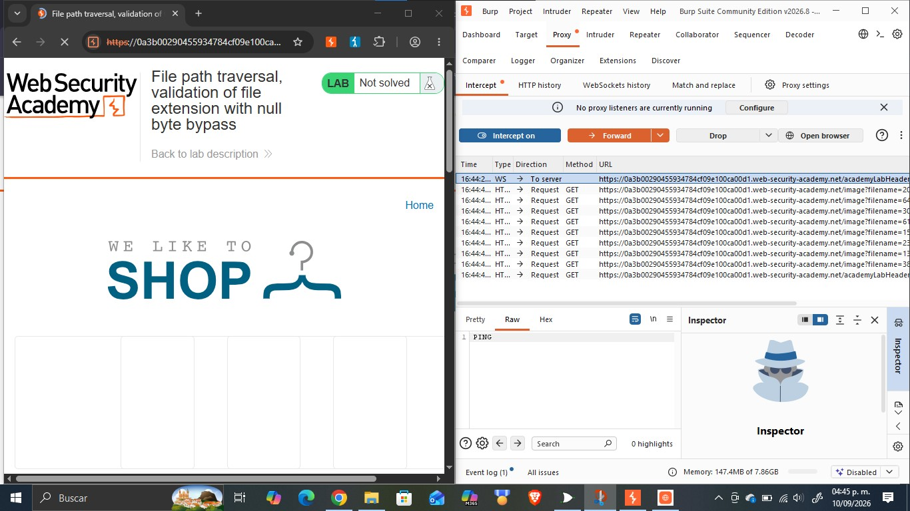
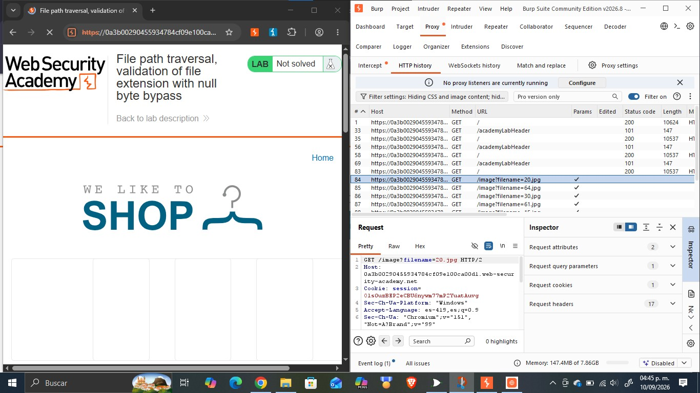
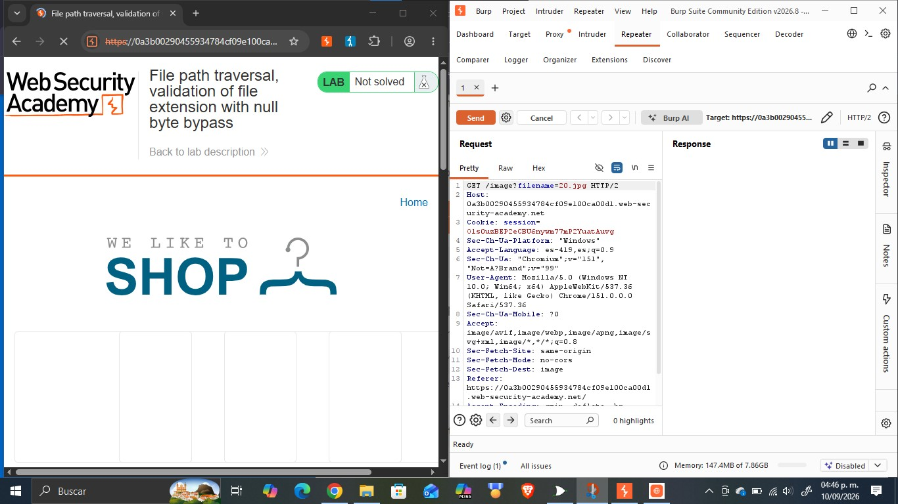
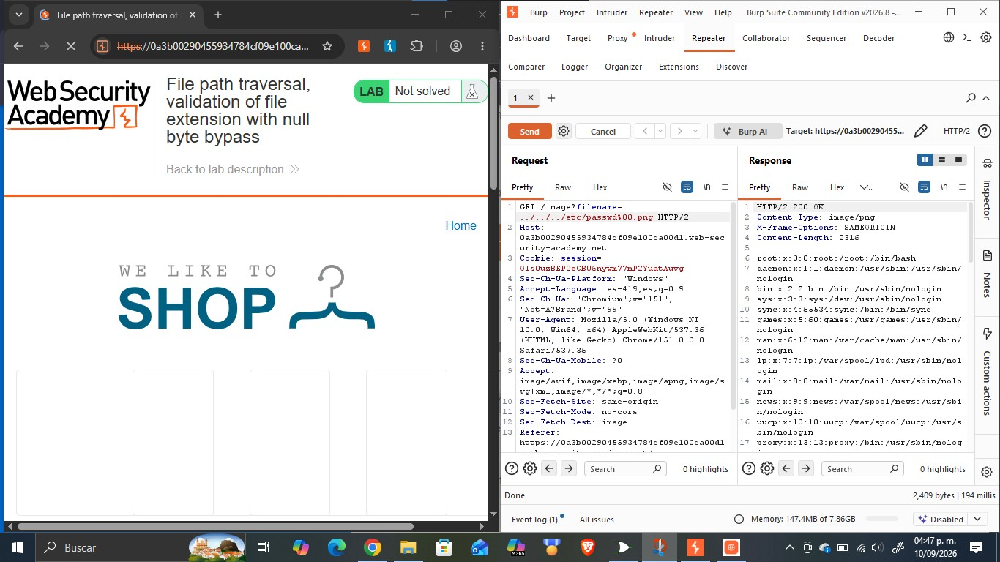
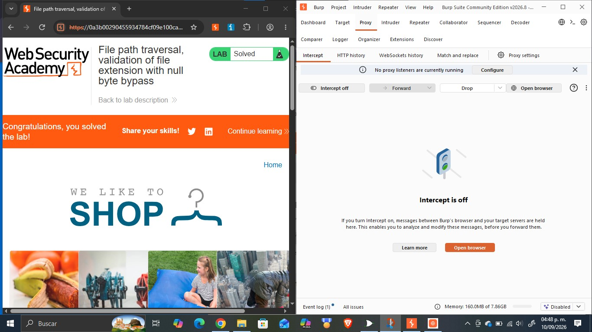

Objetivo
Este reporte documenta la resolución del laboratorio «File path traversal, validation of file extension with null byte bypass» de PortSwigger Web Security Academy, cuyo objetivo es explotar una vulnerabilidad de path traversal en la funcionalidad de visualización de imágenes de una tienda en línea, sorteando una validación que exige que la ruta recibida termine con la extensión de archivo esperada, mediante la inyección de un byte nulo, con el fin de acceder a archivos del sistema operativo del servidor que no deberían ser accesibles públicamente. La actividad forma parte del portafolio de evidencias «Road to Hall of Fame» de la asignatura CNO IV Seguridad Informática y profundiza en un quinto obstáculo frente al path traversal categoría A01:2021 Broken Access Control del OWASP Top 10, relacionado con la forma en que distintas capas de la aplicación interpretan de manera diferente el mismo valor de entrada, así como en las técnicas para evadirlo usando Burp Suite.
Desarrollo
Esta sección documenta el laboratorio realizado en la práctica: su ficha técnica, la fundamentación de la vulnerabilidad explotada, el procedimiento seguido paso a paso con la evidencia fotográfica integrada en cada paso, el análisis del payload utilizado y las medidas de mitigación recomendadas.
| Nombre del Laboratorio | Nivel | Tipo de Explotación | Objetivo del laboratorio |
|---|---|---|---|
| File path traversal, validation of file extension with null byte bypass | Practitioner | Path Traversal / Directory Traversal bypass de una validación de extensión de archivo mediante inyección de byte nulo (%00) en el parámetro filename. | Explotar la vulnerabilidad de path traversal presente en la funcionalidad de visualización de imágenes de producto, añadiendo un byte nulo seguido de la extensión .png exigida por la validación, para recuperar el contenido del archivo /etc/passwd del servidor. |
Explicación técnica de la vulnerabilidad
En este laboratorio la aplicación implementa una defensa distinta a las anteriores: en lugar de filtrar secuencias de traversal o validar el directorio inicial, exige que el valor del parámetro filename termine con la extensión de archivo esperada, «.png», antes de aceptarlo como una imagen válida. La causa raíz de la vulnerabilidad está en que la aplicación realiza esta validación de extensión a nivel de cadena de texto (comparando los últimos caracteres del valor recibido), mientras que la operación de apertura del archivo se ejecuta más adelante mediante una función de bajo nivel del sistema operativo, escrita en un lenguaje como C, donde el carácter nulo («\0», representado en la URL como «%00») se interpreta como el terminador de una cadena de texto. Esta diferencia de interpretación entre ambas capas la de validación, que ve la cadena completa, y la del sistema de archivos, que se detiene en el primer byte nulo permite a un atacante construir una entrada que satisface la validación mostrando la extensión «.png» al final, pero que en realidad, una vez trunca por el sistema en el byte nulo, apunta a un archivo completamente distinto. Esta vulnerabilidad ilustra un obstáculo diferente a los de los laboratorios anteriores: la falla no está en el patrón filtrado, el orden de decodificación ni el alcance de la validación de ruta, sino en la inconsistencia entre cómo dos componentes distintos del sistema interpretan el mismo valor de entrada. Corresponde igualmente a la categoría A01:2021 – Broken Access Control del OWASP Top 10.
Procedimiento paso a paso
Paso 1. Se abrió el laboratorio «File path traversal, validation of file extension with null byte bypass» en el navegador integrado de Burp Suite, con Intercept desactivado, verificando el estado inicial «Not solved».

Paso 2. Se activó la opción «Intercept on» en la pestaña Proxy de Burp Suite y se recargó la página principal, capturando la primera petición GET / enviada por el navegador hacia el servidor.

Paso 3. Al reenviar (Forward) las peticiones interceptadas, se observó en el historial HTTP que el navegador solicitaba múltiples recursos a través del endpoint /image, cada uno con un parámetro filename distinto, correspondientes a las imágenes de los productos de la tienda.

Paso 4. Se seleccionó la petición GET /image?filename=20.jpg en el historial HTTP y se examinaron sus cabeceras completas para confirmar la estructura exacta de la petición, incluyendo la cookie de sesión y el método utilizado.

Paso 5. La petición se envió a la pestaña Repeater de Burp Suite (Send to Repeater) para poder modificarla y reenviarla de forma controlada, conservando inicialmente el valor original del parámetro.

Paso 6. En Repeater se sustituyó el valor del parámetro filename por ../../../etc/passwd%00.png, de forma que la cadena termina con la extensión «.png» exigida por el filtro, pero el byte nulo intermedio hace que el sistema de archivos trunque la ruta justo antes de ese sufijo al momento de abrir el archivo.
Paso 7. Se envió la petición modificada mediante el botón Send y se analizó la respuesta del servidor, confirmando el código de estado 200 OK y verificando que el cuerpo de la respuesta contenía el listado completo de usuarios del sistema, lo que evidenció la lectura exitosa del archivo /etc/passwd.

Paso 8. Se regresó al navegador y se recargó la página del laboratorio, confirmando que el banner superior mostraba el mensaje «Congratulations, ¡you solved the lab!» y que el estado del laboratorio había cambiado de «Not solved» a «Solved».

Explicación del payload
El payload utilizado fue ../../../etc/passwd%00.png, enviado como valor del parámetro filename en la petición GET /image?filename=../../../etc/passwd%00.png. El payload combina dos técnicas ya conocidas con una nueva: «../../../etc/passwd» es la secuencia de traversal estándar que sube tres niveles de directorio y apunta al archivo de cuentas de usuario del sistema, exactamente igual que en el laboratorio de path traversal simple; el sufijo «%00.png» es la parte diseñada específicamente para esta defensa. «%00» es la codificación URL de un byte nulo, y «.png» es la extensión que la validación exige encontrar al final de la cadena. Cuando la aplicación valida la entrada como texto, ve la cadena completa terminando en «.png» y la acepta sin objeciones. Sin embargo, cuando esa misma cadena se pasa a la función del sistema operativo encargada de abrir el archivo, el byte nulo es interpretado como el final de la cadena, por lo que todo lo que viene después incluida la extensión «.png» que acababa de convencer al validador se ignora por completo, y el archivo que realmente se abre es «../../../etc/passwd». El payload es efectivo porque explota que la capa de validación y la capa que finalmente usa el dato interpretan la misma cadena de texto de dos maneras distintas.
Mitigación recomendada
Para prevenir y corregir esta vulnerabilidad se recomienda:
- Rechazar cualquier entrada que contenga bytes nulos («%00» o su representación decodificada) antes de realizar cualquier otra validación, dado que un byte nulo dentro de un nombre de archivo nunca es legítimo.
- Utilizar en toda la aplicación bibliotecas y APIs modernas de manejo de rutas que traten la entrada como una secuencia de longitud definida (no terminada en un carácter especial), de modo que la validación y la operación final interpreten el valor de forma consistente.
- Evitar construir rutas de archivo a partir de datos proporcionados por el cliente; en su lugar, aceptar solo un identificador indirecto (p. ej. un ID numérico mapeado internamente al archivo real y a su extensión).
- Validar la extensión del archivo mediante una lista blanca de extensiones permitidas aplicada sobre la ruta ya canonicalizada y truncada como la interpretaría el sistema operativo, no sobre la cadena cruda recibida del cliente.
- Ejecutar el proceso del servidor de aplicaciones con el mínimo privilegio necesario, restringiendo los permisos de lectura únicamente a los directorios estrictamente requeridos.
- Incorporar pruebas de seguridad (SAST/DAST) con payloads de inyección de bytes nulos y otras técnicas de bypass conocidas dentro del ciclo de desarrollo seguro.
Resultados
Se logró explotar exitosamente la vulnerabilidad de path traversal presente en el endpoint /image, evadiendo la validación de extensión de archivo mediante la inyección de un byte nulo. Al sustituir el parámetro filename por ../../../etc/passwd%00.png, se obtuvo una respuesta HTTP 200 OK cuyo cuerpo contenía el archivo /etc/passwd completo del servidor, evidenciando cuentas del sistema como root, daemon, bin, sys y www-data, entre otras. Este hallazgo fue confirmado por el propio laboratorio de PortSwigger, que actualizó automáticamente el estado de «Not solved» a «Solved» al detectar la lectura del archivo objetivo. El resultado demuestra que validar el formato superficial de una cadena (como su sufijo) es insuficiente cuando esa validación no coincide exactamente con la forma en que el dato será interpretado por el componente que finalmente lo procesa, en este caso una función de bajo nivel del sistema operativo que trunca la cadena en el primer byte nulo.
Conclusión
Este laboratorio permitió comprender que las inconsistencias entre distintas capas de una aplicación en este caso, entre la validación de una cadena de texto y su interpretación posterior por una función del sistema operativo escrita en un lenguaje de bajo nivel pueden convertirse en vulnerabilidades explotables incluso cuando cada capa, vista de forma aislada, parece funcionar correctamente. Se reforzó el uso de Burp Suite en particular Repeater para construir y verificar un payload que combina una secuencia de traversal clásica con una técnica de bypass específica (inyección de byte nulo). Esta actividad complementa los contenidos de la asignatura CNO IV Seguridad Informática al mostrar que una revisión de seguridad debe considerar cómo se propaga y transforma un mismo dato de entrada a través de todo el flujo de la aplicación, y no evaluar cada control de forma aislada. Como siguiente paso dentro del portafolio «Road to Hall of Fame», se continuará documentando variantes adicionales de esta y otras vulnerabilidades.
Referencias bibliográficas
- PortSwigger. (s.f.). File path traversal, validation of file extension with null byte bypass. PortSwigger Web Security Academy. https://portswigger.net/web-security/file-path-traversal/lab-validate-file-extension-null-byte-bypass
- PortSwigger. (s.f.). Path traversal. PortSwigger Web Security Academy. https://portswigger.net/web-security/file-path-traversal
- OWASP. (2021). A01:2021 – Broken Access Control. OWASP Top 10. https://owasp.org/Top10/A01_2021-Broken_Access_Control/
- PortSwigger. (s.f.). Burp Suite documentation. https://portswigger.net/burp/documentation